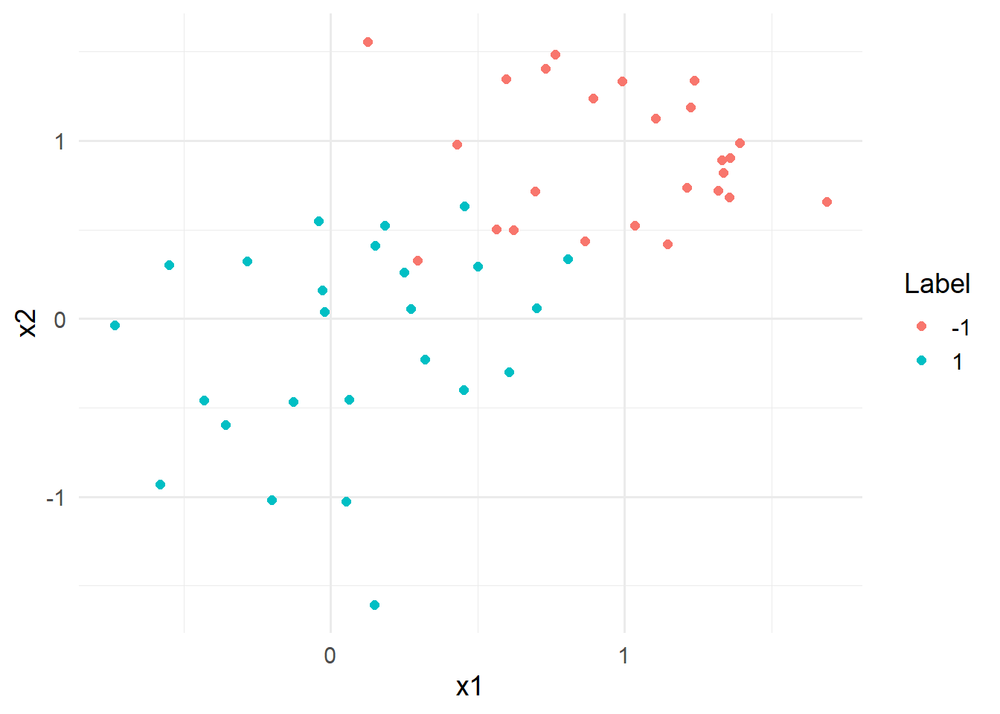
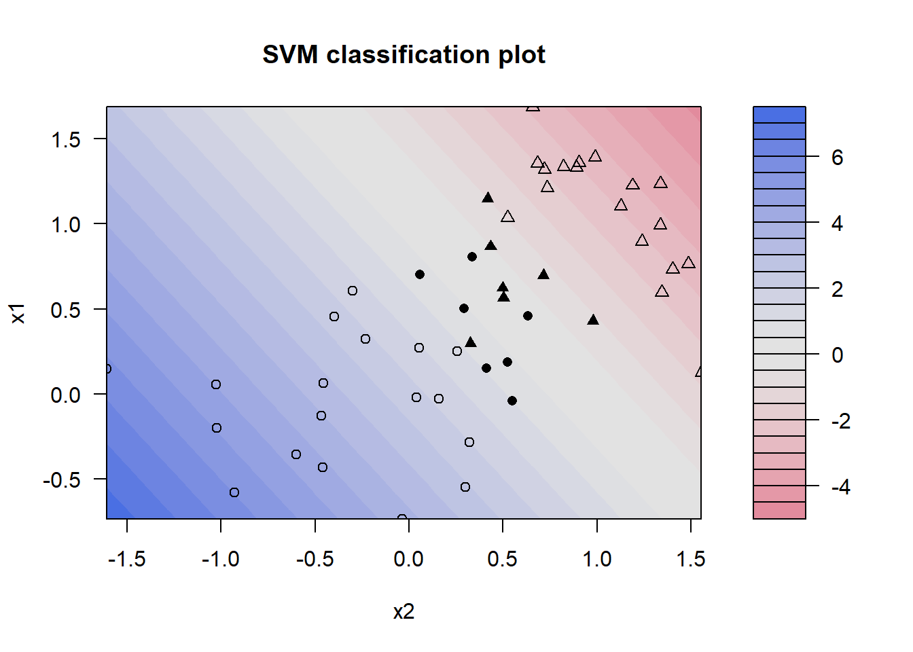
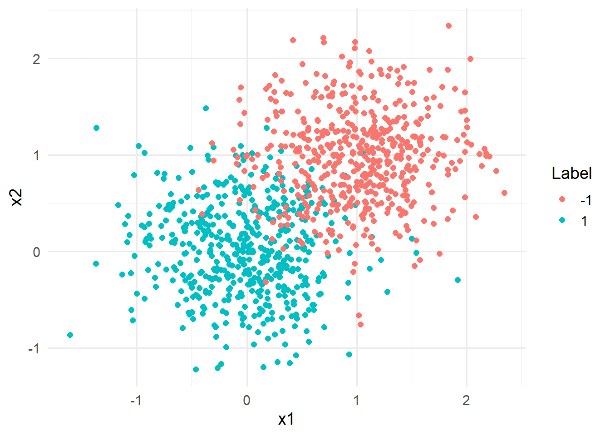

library(tidyverse)
library(tidymodels)
library(finetune)
library(patchwork)
library(ggtext)
library(stacks)
library(kernlab)8 Support Vector Machines and Stacking
In this exercise session, we discuss how to train different support vector machines (SVMs) and create a stack in R.
SVMs and stacks are available in the {tidymodels} framework which speeds setting up a training and testing routine significantly.
8.1 Introduction
We will shortly discuss how to train and tune SVMs on a toy data set in R, before training a stack on the same data.
Libraries used throughout the session:
8.1.1 Support Vector Machines
Recall, solving the the dual problem
\[\begin{equation} L_D = \sum_{i=1}^{n} \alpha_i-\frac{1}{2}\sum_{i=1}^{n}\sum_{j=1}^n\alpha_i\alpha_jy_iy_jx_i^\top x_j, \quad \text{s.t.} \quad \alpha_i \geq 0\text{ for all } i \end{equation}\]
yields a linear SVM.
Instead of using a linear SVM enrich our feature space by replacing the term \(x_i^\top x_j\) with a function \(K:\mathbb{R}^k\times\mathbb{R}^k\to \mathbb{R}\). For polynomials of degree \(d\geq 2\), we apply the kernel function \(K(x_i,x_j)= (1+x_i^\top x_j)^d\). Another popular choice we will consider is the so-called radial basis kernel (RBF) given by
\[\begin{equation} K(x_i,x_j)= \exp\left(-\frac{\|x_i - x_j\|^2}{c}\right)^d, \quad c\geq 0. \end{equation}\]
The {tidymodels} frameworks contains three different SVM model specifications, namely
svm_linear, which specifies a simple linear SVM,svm_poly, which specifies a polynomial SVM (including polynomials of degree 1), andsvm_rbf, which specifies an SVM with RBF Kernel.
Consider the following toy data set:
set.seed(121)
data_toy <- tibble(
x1 = c(
rnorm(25,0,0.5),
rnorm(25,1,0.5)
),
x2 = c(
rnorm(25,0,0.5),
rnorm(25,1,0.5)
),
y = factor(rep(c(1,-1),each = 25))
)The two class data contains a two dimensional dataset where both axes are generated using a normal distribution. The samples with label 1 are drawn from a \(\mathcal{N}((0,0)^\top, 0.5 \cdot I D_2)\) distribution, while the samples with label -1 are drawn from a \(\mathcal{N}((1,1)^\top, 0.5 \cdot I D_2)\) distribution.
data_toy %>% ggplot(aes(x=x1,y=x2, color = y)) +
geom_point(size = 2)+
labs(color = "Label")+
theme_minimal(base_size = 14)
Without creating a workflow or recipe, we now want to train three different SVMs.
Using the svm_poly function, we can specify a linear SVM for the toy data by setting the degree to 1 and mode to "classification". Setting the engine to "kernlab" and applying the fit function trains the linear SVM.
svm_lin_res <- svm_poly(
mode = "classification",
degree = 1
) %>%
set_engine("kernlab") %>%
fit(y ~ ., data_toy)To plot the decision surfaces, we need to extract the fit engine and pass it to the kernlabs::plot function:
svm_lin_res %>%
extract_fit_engine() %>%
plot(data = data_toy) 
The plot depicts the contour plot of the decision surface of the linear SVM. The boundary between the two classes (where the decision function equals zero) is represented by the transition area in the middle of the plot, where the colors shift from blue to red. The greyed-out area indicates a lower confidence for the decision, meaning that the algorithm is not sure whether the values belong to class \(-1\) or \(1\). Any point on the blue shape is classified as a member of the class with label 1, whereas any point located on the red shade is classified as a member of the class with label -1. The filled shapes denote support vectors, i.e., vectors that influenced the decision surfaces, while shapes that are only outlined do not represent support vectors. △ indicate samples with class label -1 and ∘ indicate samples with class label 1.
Instead of using the kernlab::plot() function, you can also visualize the decision surface using ggplot.
However, as it turns out, this is relatively complicated. In case you are still interested, the following snippet generates the decision surface using ggplot.
Code
library(ggnewscale)
supp_vec <- svm_poly(
mode = "classification",
degree = 1
) %>%
set_engine("kernlab", scaled = c(F,F,T,T)) %>%
fit(y ~ ., data_toy) %>%
extract_fit_engine() %>%
xmatrix() %>%
pluck(1) %>%
as_tibble()
data_toy <- data_toy %>%
mutate(supp_vec = data_toy$x1 %in% supp_vec$x1)
x_grid <- expand_grid(x1 = seq(-2,2,length.out = 100),
x2 = seq(-2,2,length.out = 100)) %>%
bind_cols(predict(svm_lin_res,.,type="prob")) %>%
mutate(val = (`.pred_-1`*2)-1)
#transform probabilities to take values between -1,1
x_grid %>% ggplot(aes(x=x1,y=x2))+
geom_raster(aes(fill= val), interpolate = TRUE)+
geom_point(data = data_toy %>% filter(supp_vec==F),
aes(shape = y),
cex = 3,
show.legend=FALSE) +
scale_shape_manual(values = c("-1" = 1,"1" = 2))+
new_scale("shape")+
geom_point(data = data_toy %>% filter(supp_vec==T),
aes(shape = y),
cex = 3) +
labs(
shape = "Support Vectors"
)+
coord_fixed(expand = FALSE)+
scale_fill_gradient2(high = "dodgerblue4",
midpoint = 0,
low = "firebrick2")+
labs(fill = "Decision Value")+
theme_minimal()
8.1.2 Stacking
The idea behind linear stacking is relatively simple: Assume there are \(M\) different models \(\hat{f}_1,...,\hat{f}_M\), all fitted on the same training data. Then, a target can be predicted by taking a weighted average of all \(M\) models, i.e., \[\begin{equation} \hat{y} = \sum_{m=1}^{M}\omega_m\hat{f}_m(x), \end{equation}\]
where \(\omega_1,...,\omega_M\in [0,1]\) such that \(\sum_{m=1}^{M}\omega_m = 1\).
To find out which \(\{\omega_m\}_{m=1}^{M}\) yield the best results, we can solve the optimization problem minimizing the loss function
\[\begin{equation} \underset{\omega_1,...,\omega_M}{\min} L(y,\hat{y}) = \underset{\omega_1,...,\omega_M}{\min} \left\{\frac{1}{n}\sum_{i=1}^n \left(y_i-\sum_{m=1}^M \omega_m \hat{f}_m(x_i)\right)^2\right\}. \end{equation}\]
The modeling process for a stack with {tidymodels} can be described as follows:
Define candidates for the stack by fitting (tuned) models to the training data by using the
control_stack_gridfunction in the tune or model specification.Initialize a stack object using the
stacksfunction.Add candidate models to the stack using the
add_candidatesfunction.Pass the
stackobject to theblend_predictionsfunction, which specifies how the predictions of each candidate are evaluated.Fit the candidate ensemble with non-zero stacking coefficients using the
fit_membersfunction.Predict on test data using the
predictfunction to evaluate out-of-sample performance.
Consider the following toy example data which is created in a similiar fashion as the data set from the previous section.
set.seed(121)
data_toy_big <- tibble(
x1 = c(
rnorm(500,0,0.5),
rnorm(500,1,0.5)
),
x2 = c(
rnorm(500,0,0.5),
rnorm(500,1,0.5)
),
y = factor(rep(c(1,-1),each = 500))
)Consider the following figure, displaying the extended data set:
data_toy_big %>% ggplot(aes(x=x1,y=x2, color = y)) +
geom_point(size = 2)+
labs(color = "Label")+
theme_minimal(base_size = 14)
Considering the figure above, it is quickly becomes evident that the classes are not linearly seperable.
We, therefore, now want to tune and fit different classification models and combine them to a stack predict the class labels as good as possible.
First, set up the control grid:
ctrl_grid <- control_stack_grid()Then, create a data split and tune the candidate models. For our simple example, we will tune a random forest and XGBoost classifier using a simple training, validation and test split. The candidate models for the stack are then given by the models fitted with different hyperparameters. First, we create the data split:
set.seed(121) split_toy <- initial_split(data_toy_big,prop = 4/5) data_train <- training(split_toy) data_val <- validation_split(data_train, prop = 4/5)Warning: `validation_split()` was deprecated in rsample 1.2.0. ℹ Please use `initial_validation_split()` instead.data_test <- testing(split_toy)Then, we train several random forests by tuning the hyper parameters
min_nandtrees:set.seed(121) rf_model_spec <- rand_forest( mode = "classification", mtry = 1, min_n = tune(), trees = tune() ) %>% set_engine("ranger") rec_toy<- recipe( y~., data = data_train ) wf_toy <- workflow() %>% add_model(rf_model_spec) %>% add_recipe(rec_toy) rf_tune_res <- wf_toy %>% tune_grid(grid = 10, resamples = data_val, control = ctrl_grid )Then, we train a XGBoost model in the same fashion:
set.seed(121) xgb_model_spec <- boost_tree( trees = 1000, tree_depth = tune(), min_n = tune(), mtry = 1, loss_reduction = tune(), learn_rate = tune() ) %>% set_engine("xgboost") %>% set_mode("classification") wf_toy <- wf_toy %>% update_model(xgb_model_spec) xgb_tune_res <- wf_toy %>% tune_grid( resamples = data_val, grid = 20, control = ctrl_grid )The stack candidates can be added with the
add_candidates()function:stack_toy <- stacks() %>% # add candidate members add_candidates(rf_tune_res) %>% add_candidates(xgb_tune_res)By using the
blend_predictionsfunction, we can specify, how the predictions should be blended together. The options we are interested in are the following:mixture: A number between zero and one (inclusive) specifying the proportion of L1 regularization (i.e. lasso) in the model.mixture = 1indicates a pure lasso model,mixture = 0indicates ridge regression, and values in the open interval (0,1) specify an elastic net.penalty: A vector containing penalty values for the amount of regularization used in member weighting. If more than one value is contained in the vector, the library will tune over the candidte values to select the best penalty.metric: The metric(s) to use in tuning the regularization penalty on the stacking coefficients.times: Number of bootstrap samples tuned over by the model that determines stacking coefficients.
set.seed(121) stack_toy <- stack_toy %>% blend_predictions( mixture = 0.9, penalty = 10^(-6:-1), metric = metric_set(pr_auc), times = 20 )Finally, we can fit the stack by passing the previously specified stack object that contains the candidates and blend specifications to the
fit_members()function.set.seed(121) stack_toy <- stack_toy %>% fit_members()We want to evaluate our stack and in order to do so, we first need to create predictions from our test dataset. The following code snippet creates predictions based on the test set and binds them to the test data columns.
stack_pred <- data_test %>% bind_cols(predict(stack_toy, .))
To evaluate the stack results, we can use the typical metrics provided in the {yardstick} library. For example, the accuracy of our stacked model is around \(92\%\).
stack_pred %>% accuracy(truth = y, .pred_class)# A tibble: 1 × 3
.metric .estimator .estimate
<chr> <chr> <dbl>
1 accuracy binary 0.93Note, to obtain probabilities for the predictions the argument type = "prob" has to be passed in the predict function.
8.2 Exercises
The goal of this exercise is to create an SVM model with an RBF kernel that serves as a classifier for an underlying dataset.
The dataset we will consider in this exercise will be the Credit Card Customers data set that we already used in previous exercises. You can either download it again using the provided link or the button below.
Recall that the data set consists of 10,127 entries that represent individual customers of a bank including but not limited to their age, salary, credit card limit, and credit card category.
The goal is to find out whether a customer will stay or leave the bank given the above features.
The following training, validation and test split should be used for training the models of the subsequent exercises.
credit_info <- read.csv("data/BankChurners.csv")
set.seed(121)
split <- initial_split(credit_info, strata = Attrition_Flag)
data_train_ci <- training(split)
data_val_ci <- validation_split(data_train_ci)
data_test_ci <- testing(split)Preprocessing of the data is handled by the following recipe.
levels_income <- c("Less than $40K","$40K - $60K",
"$60K - $80K","$80K - $120K","$120K +")
levels_education <- c("Uneducated", "High School","College",
"Graduate", "Post-Graduate", "Doctorate")
rec_ci <- recipe(Attrition_Flag ~., data = data_train_ci) %>%
update_role(CLIENTNUM, new_role = "ID") %>%
step_mutate_at(all_nominal_predictors(),
fn = ~if_else(.%in% c("Unknown","unknown"),NA,.)
)%>%
step_string2factor(Income_Category,
levels = levels_income,
ordered = TRUE) %>%
step_string2factor(Education_Level,
levels = levels_education,
ordered = TRUE) %>%
step_ordinalscore(all_ordered_predictors()) %>%
step_unknown(all_factor_predictors()) %>%
step_impute_knn(all_predictors()) %>%
step_dummy(all_nominal_predictors()) %>%
step_zv(all_predictors()) %>%
step_corr(all_predictors())
ci_wf <- workflow() %>%
add_recipe(rec_ci) Note, that compared to the previous session, we did not change the values of the target variable Attrition_Flag. By changing the targets name in the recipe, we potentially run into problems when fitting the stack. Therefore, we change the labels once all the predictions have been generated to obtain an easier to understand confusion matrix.
Exercise 8.1 In this exercise, we want to tune and evaluate an SVM. The hyperparameter cost, i.e. the parameter \(D\) in the maximum margin formulation
\[\begin{align*} &\max_{\omega,b,\|\omega\|\leq 1} D\quad \text{ s.t. }\quad y_i(x_i^\top\omega + b)\geq D,\quad \forall i=1,...,n. \end{align*}\]
is the only parameter we wish to tune.
Recall, that the cost parameter penalizes samples that are predicted to be in the wrong class. A larger cost will thus lead to a more flexible model with fewer misclassifications (Bias-Variance tradeoff).
Create and tune a SVM model with RBF kernel, where the
costparameter is set to tune. Candidates for the optimalcostparameter can be created by passinggrid = 20in thetune_grid()function.Evaluate the performance on the test set by plotting a ROC and PR Curve.
Create a confusion matrix for the test data and calculate the accuracy, precision and recall.
Exercise 8.2 In this last exercise, we want to create a stack model to predict the target variable Attrition_Flag.
The potential stack candidates are the XGBoost and random forest tuning results of Exercise 06.
Create a control stack grid that can be added to the tuning specifications.
Retune the XGBoost and random forest model and add the candidates to a stack. As grid size for the hyper parameters, choose
30.Add the candidate models to a stack and blend the predictions. To blend the predictions, use a pure lasso approach and tune the penalty with a grid given by the vector
10^(-6:-2). Use the metricaccuracyto select the best model coefficients.Finally, fit the stack on the whole training data and evaluate it on the test data by generating a confusion matrix and calculating the sensitivity, precision, and accuracy. Before generating the confusion matrix, change the labels of the target feature and prediction to
"Negative"if the customer is (predicted to be) an existing customer and to"Positive"if the customer is (predicted to be) an attrited customer. Is the stacked model better than the LightGBM model that was presented in Session 06?
8.3 Solutions
Solution 8.1 (Exercise 8.1).
svm_model_rbf_tune <- svm_rbf(
mode = "classification",
cost = tune()
) %>%
set_engine("kernlab")
ci_wf <- ci_wf %>% add_model(svm_model_rbf_tune)svm_rbf_tune_res <- ci_wf %>%
tune_grid(
resamples = data_val_ci,
grid = 20
)svm_tune_best <- svm_rbf_tune_res %>% select_best(metric = "roc_auc")
last_rbf_fit <- ci_wf %>%
finalize_workflow(svm_tune_best) %>%
last_fit(split)
svm_rbf_roc_tuned <- last_rbf_fit %>%
collect_predictions() %>%
roc_curve(Attrition_Flag, `.pred_Attrited Customer`) %>%
mutate(model = 'SVM')
svm_rbf_pr_tuned <- last_rbf_fit %>%
collect_predictions() %>%
pr_curve(Attrition_Flag, `.pred_Attrited Customer`) %>%
mutate(model = 'SVM')cols <- c("#506432")
names(cols) <- c("svm")
plot_title <- glue::glue("ROC- and PR-Curve for a <span style='color:{cols['svm']};'>SVM with RBF kernel</span><br>")
p1 <- svm_rbf_roc_tuned %>%
ggplot(aes(x = 1 - specificity, y = sensitivity, col = model)) +
geom_path(lwd = 1.5, alpha = 0.8) +
geom_abline(lty = 3) +
coord_equal() +
scale_color_manual(values = unname(cols))+
theme_minimal(base_size = 14)+
theme(legend.position = "none")
p2 <- svm_rbf_pr_tuned %>%
ggplot(aes(x = recall, y = precision, col = model)) +
geom_path(lwd = 1.5, alpha = 0.8) +
coord_equal() +
scale_color_manual(values = unname(cols))+
theme_minimal(base_size = 14)+
theme(legend.position = "none")
(p1|p2) +
plot_annotation(
title = plot_title,
theme = theme(plot.title = element_markdown()))Solution 8.2 (Exercise 8.2).
-
ctrl_grid_ci <- control_stack_grid() First, we specify the random forest model and add it to the recipe.
rf_model <- rand_forest( mode = "classification", mtry = tune(), min_n = tune(), trees = 1000 ) %>% set_engine("ranger") ci_wf <- ci_wf %>% update_model(rf_model)Then, we train it on the training data and validate the candidate hyper parameters on the validation data. By setting the argument
controltocrtl_grid_ci, we specify that the candidate models can be added to the stack.set.seed(121) rf_tune_res <- ci_wf %>% tune_grid(grid = 30, resamples = data_val_ci, control = ctrl_grid_ci )i Creating pre-processing data to finalize unknown parameter: mtryAfter tuning the random forest, we specify and tune a XGBoost model.
set.seed(121) xgb_model <- boost_tree( trees = 1000, tree_depth = tune(), min_n = tune(), mtry = tune(), loss_reduction = tune(), learn_rate = tune() ) %>% set_engine("xgboost") %>% set_mode("classification") ci_wf <- ci_wf %>% update_model(xgb_model) doParallel::registerDoParallel() xgb_tune_res <- tune_grid( ci_wf, resamples = data_val_ci, grid = 30, control = ctrl_grid_ci )i Creating pre-processing data to finalize unknown parameter: mtry-
stack_ci <- stacks() %>% add_candidates(rf_tune_res) %>% blend_predictions( mixture = 1.0, penalty = 10^(-6:-2), metric = metric_set(accuracy), times = 20 ) -
set.seed(121) stack_ci <- stack_ci %>% fit_members() stack_pred <- data_test_ci %>% bind_cols(predict(stack_ci, .)) %>% mutate( .pred_class = factor( if_else(.pred_class == 'Existing Customer', "Negative", "Positive" ) ), Attrition_Flag = factor( if_else( Attrition_Flag == 'Existing Customer', "Negative", "Positive") ) )stack_pred %>% conf_mat(Attrition_Flag,.pred_class) %>% pluck(1) %>% as_tibble() %>% mutate( Prediction = factor(Prediction, levels = rev(levels(factor(Prediction)))), Truth = factor(Truth) ) %>% ggplot(aes(x = Prediction, y = Truth,fill = n)) + geom_tile( colour = "gray50")+ geom_text(aes(label = n))+ scale_fill_gradient(low = "white", high = "#9AEBA3")+ theme_minimal()+ theme(legend.position = "none")\[ \mathrm{Sensitivity} = \frac{358}{358+49} = 0.8796069 \] \[ \mathrm{Prescision} = \frac{358}{358+20} = 0.9470899 \]
\[ \mathrm{Accuracy} = \frac{358+2105}{2532} = 0.9727488 \]
8.4 Session info
sessionInfo()R version 4.2.3 (2023-03-15 ucrt)
Platform: x86_64-w64-mingw32/x64 (64-bit)
Running under: Windows 10 x64 (build 22631)
Matrix products: default
locale:
[1] LC_COLLATE=German_Germany.utf8 LC_CTYPE=German_Germany.utf8
[3] LC_MONETARY=German_Germany.utf8 LC_NUMERIC=C
[5] LC_TIME=German_Germany.utf8
attached base packages:
[1] stats graphics grDevices utils datasets methods base
other attached packages:
[1] glmnet_4.1-8 Matrix_1.6-0 xgboost_1.7.7.1 ranger_0.16.0
[5] ggnewscale_0.5.0 kernlab_0.9-32 stacks_1.0.5 ggtext_0.1.2
[9] patchwork_1.3.0 finetune_1.2.0 yardstick_1.3.1 workflowsets_1.1.0
[13] workflows_1.1.4 tune_1.2.1 rsample_1.2.1 recipes_1.1.0
[17] parsnip_1.2.1 modeldata_1.4.0 infer_1.0.7 dials_1.3.0
[21] scales_1.3.0 broom_1.0.7 tidymodels_1.2.0 lubridate_1.9.3
[25] forcats_1.0.0 stringr_1.5.1 dplyr_1.1.4 purrr_1.0.2
[29] readr_2.1.5 tidyr_1.3.1 tibble_3.2.1 ggplot2_3.5.1
[33] tidyverse_2.0.0
loaded via a namespace (and not attached):
[1] doParallel_1.0.17 DiceDesign_1.10 tools_4.2.3
[4] backports_1.4.1 utf8_1.2.3 R6_2.5.1
[7] rpart_4.1.23 colorspace_2.1-0 nnet_7.3-19
[10] withr_3.0.2 tidyselect_1.2.1 compiler_4.2.3
[13] cli_3.6.2 xml2_1.3.6 labeling_0.4.3
[16] commonmark_1.9.1 digest_0.6.35 rmarkdown_2.28
[19] pkgconfig_2.0.3 htmltools_0.5.8.1 parallelly_1.37.1
[22] lhs_1.1.6 fastmap_1.1.1 htmlwidgets_1.6.4
[25] rlang_1.1.3 rstudioapi_0.17.1 shape_1.4.6.1
[28] generics_0.1.3 farver_2.1.1 jsonlite_1.8.8
[31] magrittr_2.0.3 Rcpp_1.0.12 munsell_0.5.1
[34] fansi_1.0.4 GPfit_1.0-8 lifecycle_1.0.4
[37] furrr_0.3.1 stringi_1.8.3 yaml_2.3.8
[40] MASS_7.3-58.2 grid_4.2.3 parallel_4.2.3
[43] listenv_0.9.1 butcher_0.3.4 lattice_0.22-6
[46] splines_4.2.3 gridtext_0.1.5 hms_1.1.3
[49] knitr_1.43 pillar_1.9.0 markdown_1.13
[52] future.apply_1.11.2 codetools_0.2-20 glue_1.6.2
[55] evaluate_1.0.1 data.table_1.15.4 vctrs_0.6.5
[58] tzdb_0.4.0 foreach_1.5.2 gtable_0.3.5
[61] future_1.33.0 xfun_0.43 gower_1.0.1
[64] prodlim_2023.08.28 class_7.3-22 survival_3.6-4
[67] timeDate_4041.110 iterators_1.0.14 hardhat_1.4.0
[70] lava_1.8.0 timechange_0.3.0 globals_0.16.3
[73] ipred_0.9-14